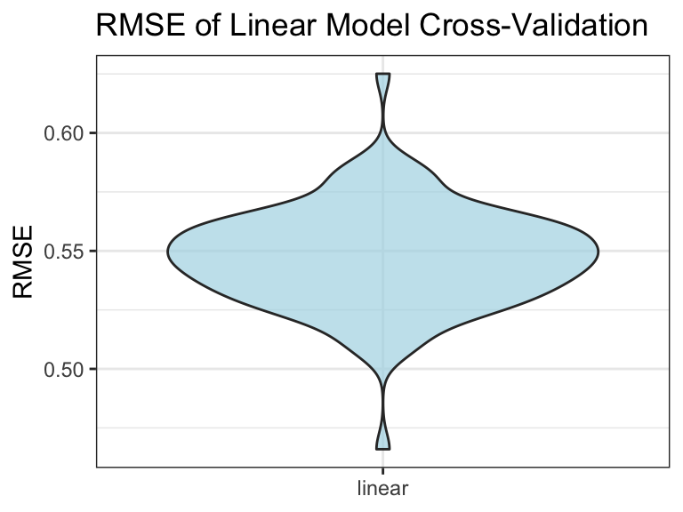

happy_df = readxl::read_xls('DataPanelWHR2021C2.xls') %>%
janitor::clean_names() %>%
rename("happiness_score"= life_ladder)To identify the significance of relationships and establish a regression model to predict the happiness score, we first take a look on the distribution of each variable.
par(mfrow= c(3,3))
# mtext("Variable Distribution", side = 3, line = -2, outer = TRUE)
for (n in 3:ncol(happy_df)){
var = names(happy_df)[n] %>%
str_replace_all("_"," ") %>%
str_to_title()
pull(happy_df,n) %>%
hist(main=NA,xlab=var)
}
mtext("Variable Distribution", side = 3, line = -2, outer = TRUE)Here our happiness score follows great bell shape and is relatively non-skewed. Most of the factors are normally distributed. Therefore we can proceed to build regression model.
Since all factors are continuous, we can apply fundamental linear regression here.
# General Model
happy_fit = happy_df %>%
select(-country_name,-year)
fit = happy_fit %>%
lm(happiness_score~., data=.)
fit_est = fit %>%
broom.mixed::tidy() %>%
mutate(
term = str_replace_all(term,"_"," "),
term = str_to_title(term))
knitr::kable(fit_est)| term | estimate | std.error | statistic | p.value |
|---|---|---|---|---|
| (Intercept) | -2.5253237 | 0.1862968 | -13.5553776 | 0.0000000 |
| Log Gdp Per Capita | 0.3823714 | 0.0254857 | 15.0034000 | 0.0000000 |
| Social Support | 1.8444740 | 0.1752311 | 10.5259501 | 0.0000000 |
| Healthy Life Expectancy At Birth | 0.0267282 | 0.0034677 | 7.7078655 | 0.0000000 |
| Freedom To Make Life Choices | 0.3900271 | 0.1307944 | 2.9819865 | 0.0029046 |
| Generosity | 0.4195941 | 0.0923454 | 4.5437459 | 0.0000059 |
| Perceptions Of Corruption | -0.6997192 | 0.0879900 | -7.9522603 | 0.0000000 |
| Positive Affect | 1.9879308 | 0.1700964 | 11.6870863 | 0.0000000 |
| Negative Affect | 0.1853176 | 0.1865965 | 0.9931458 | 0.3207803 |
The result indicated that Log Gdp Per Capita, Social Support, Healthy Life Expectancy At Birth, Freedom To Make Life Choices, Generosity, Perceptions Of Corruption, Positive Affect are all significantly correlated with happiness score, while Negative Affect does not.
To test if the model follows assumption of normal distribution, we could plot the QQ plots and related diagnostic plots.
par(mfrow=c(2,2))
plot(fit)The majority of data follows normal distribution, thus we could go on.
To test the model efficiency and its predictory ability, we apply 100 times of cross validation and calculate the mean value of root mean squared errors (RMSE) over 100 CVs.
set.seed(1)
cv_df = crossv_mc(happy_fit, 100) %>%
mutate(train = map(train,as_tibble),
test = map(test, as_tibble)) %>%
mutate(linear_mod = map(train, ~lm(happiness_score ~ ., data = .x)) ) %>%
mutate(
rmse_linear = map2_dbl(linear_mod, test, ~rmse(model = .x, data = .y)) )ggplot(cv_df,aes(x="linear",y=rmse_linear)) +
geom_violin(fill="lightblue",alpha=0.7) +
labs(x = NULL, y = "RMSE",title = "RMSE of Linear Model Cross-Validation")+
theme_bw()
mean_rmse = mean(pull(cv_df,rmse_linear))Here we can see the mean RMSE is 0.5472725, which is acceptable. Therefore, the model could be used to predict the country’s happiness score.
The outcome of the project suggests that happiness has positive associations with GDP per capita in purchasing power parity, social support, healthy life expectancy at birth, national average freedom to make life choices, generosity, positive affect measures (happiness, laugh, and enjoyment), while happiness has negative associations with negative affect measures (worry, sadness and anger) and national corruption.